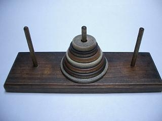
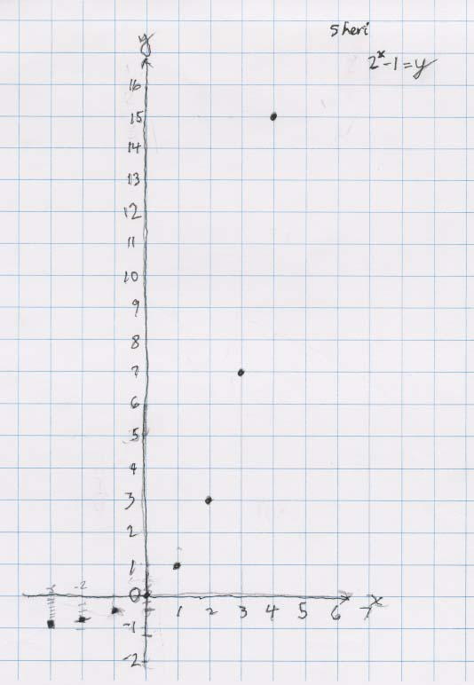
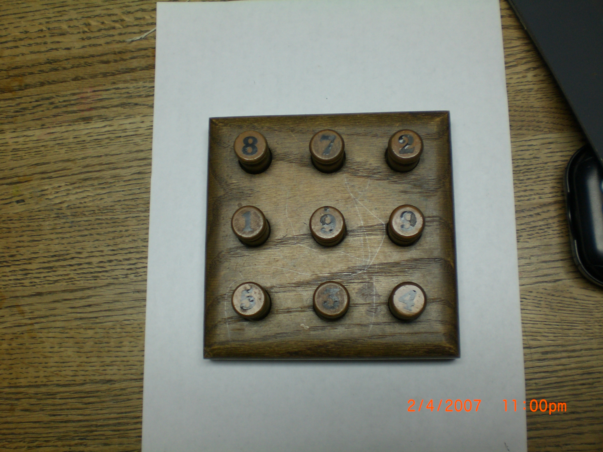
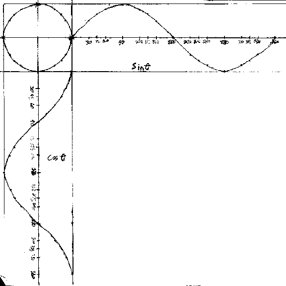

Sheri finds a
rule for the Tower
Puzzle &
Nanako finds a rule for the Peg Game/chapter 6
9/20/00 Many sessions
before this day, Sheri had worked on the Tower Puzzle (see ch. 6). The
object is to move the tower of discs from one peg to another. The rules are: you
can't put a bigger disc on top of a smaller one, you can only move one disc at a
time, and later you will need to move the discs in the minimum # of moves. Don starts young people off with maybe only 3 discs. Then lets the
student start with more.

On this day, Sheri figured out the rule for the
Tower Puzzle; her work is shown below:
In the process she found patterns in the
table of values- the differences go up 2, 4, 8, 16, 32.. Don
reminded her about writing numbers like these as powers of 2- see her work on the
right above. The y-numbers she noticed were 1 less than these powers of 2.
Don wrote 7 as 23
- 1, then Sheri wrote the
others this way and wrote the rule as 2x
- 1= y. Don asked Sheri to graph the rule and graph negative values of x.
In the process Sheri got into negative exponents and statements like 1/4 - 1 = -
3/4, which they talked about. See her work above. Her graph (an exponential
function) is shown below:

One student said the curve
approaches y = -1, and is called the asymptote.
On 9/21, Don asked Sheri to write
about what she did the day before with the Tower Puzzle. As can often be the
case, students put away their work and forget about it. Don asked her this,
explaining that the reason he asked was to make sure she understood and could
explain what she did. She started to do this and when Don saw her slowing down,
he changed the subject. He suggested she finish at home. (Sheri hasn't finished
this yet, as of 11/2/00.. it's difficult to get young people to write down
things like this. Don will persist!)
One day Don, a student and her father,
brought to
a welder the 2D graph she did of The Tower Puzzle. He made the 3D rotation of
that curve 2x - 1=y with stiff wire, below. Don hangs it in his Math room; in 25 years it has only had
to be repaired once!
Don had
Sheri as a 4-6th grader, then she went to University High School. She came back
as almost a 12th grader, to prepare for Calculus. Don worked with her for about
3 hrs. individually over the last month. Today, a week into her calculus class,
she told me "What we did the last 3 weeks (derivatives), the teacher
did with my class in one day, and I was like the only one in the class that
understood what she was talking about! It really helped for me to talk with you
about the problems as I worked on them".
It's been a pleasure working with
you Sheri, as well as your sister, your mother, 2 aunts, and 2 cousins over the
years- what a wonderful family!
Nanako played with the Peg game
(see chapter 6)

The object of this puzzle is to interchange the blue and the
red pegs. The rules are 1) you can move to a hole that's next to a peg; 2) you
can jump, but only one peg and it must be of the other color, and 3) you can't
move backwards. You must start with the empty space in the middle and end that
way. You can use golf tees, as I do, or you can use two different kinds of coins
or bottle caps or pieces of colored paper as the pieces.
It takes time for people to
figure out the pattern of how the pieces move, without having to start over. She
was able to do this fairly quickly. Then Don made a table below, where
x was the
number of pairs of pegs, and y was the number of moves to interchange the
pegs.
She started with one pair, and it took 3 moves, starting with 2 pairs, took 8
moves.

Nanako saw the pattern 1x3=3,
2x4=8, 3x5=15.. could be written as 1(1+2)=3 and 2(2+2)=8 and 3(3+2)=15..
Nanako found the rule x*(x+2)=y
with some help from Don. In the
process Don made sure she could multiply negative and positive numbers
with the pattern
(see
above at the bottom of the page in the center). She then graphed this function
to get a parabola.

They talked about the graph
having symmetry and the axis of symmetry was x = -1.
A teacher at one of Don's
workshops found a pattern that the hole
makes as the pegs are moved-very interesting!

Don never saw anything like this.
Besides the Peg Game and The Tower Puzzle, Don also has in his
Mathroom (see 5 views) :
The Chinese Ring Puzzle, given to
Don by Ian who made it in his Calculus class (no one has figured out a rule for
this puzzle, but Don and AnnEmily have done this blindfolded)

A 6-piece burr puzzle, given to Don
by a student whose grandfather made it:

The 15 puzzle (magic square- each
row, column and the 2 main diagonals have to add to 15),

Tangrams (an old Elementary Science Study McGraw-Hill
publication), as well as a few metal Tavern Puzzles from Tucker-Jones House,
Inc., Cuisenaire Rods (see Genny's dog and Sheri's ratio
of Vol of Pyramid/Vol of cube), Kaleidocycles (M.C. Escher) to put together,
1x1x1cm cubes to build the Soma pieces, Pattern
Blocks, Geostrips, Geoblocks, a scale (in kg-surprises everyone), a balance
scale with 10 gm weights, Nautilus shell-full and 1/2, other shells, protractor,
compasses, + and an oscilloscope
and oscillator.
Jonathan, a 9th grader then, views
sine waves and Lissajous figures on the oscilloscope with the help of an
oscillator (on the left).

Jonathan graphs y=sin x, then finds the equation which (a)
doubles the height, (b) has twice as many waves and (c) shifts the sine wave 60
degrees to the right.
Jonathan combines cos x and sin x at right angles. The
resultant Lissajous figure is in the upper left hand corner is a circle.

Jonathan combines sin x and sin 2x at right angles.

Jonathan combines sin x and sin 3x at right angles.

After doing these, Jonathan worked with a complex sand
pendulum which made Lissajous figures by dropping sand on a piece of paper. The
he proceeded to get the same figures by using parametric equations in
Mathematica!
Jonathan's Mom said Don was
his hero. He was ready to drop out of high school, and after working on math
with Don, he ended up doing well in mathematics, graduating, got married, and
works on computers while attending college. And most exciting, Jonathan has
become Don's hero, because he has helped fix Mrs. Cohen's and Don's computers
AND he is now making Don's A Map to Calculus you are looking at, show
Don's sample problems and student discoveries - at a click! Thank you
Jonathan!!!
Ian made this graph of sin 2x vs sin x at
right angles by hand, then Don added the colors to show where the points came
from (up from the sinx graph, and left from the sin2x- in this order- 0o
orange x 1, 30o
red x 2, 45o
green x 3, then 90o
blue x 4. These points
only make the upper half of the bow-tie on the right side.
 .
.
See Puzzles, Old & New, how to make and solve them,
by Jerry Slocum & Jack Botermans, distributed by the University of
Washington Press, Seattle
Sheri writes 64 using exponents
Sheri
solves the quadratic equation x2 - x - 1 = 0
Sheri
finds the base for Don's age of 114? =
7110
Sheri
uses the quadratic formula to find base for Don's age of
114? = 7110
Sheri
finds the measure of an inscribed angle
Sheri
uses binary numerals to make the Magic Number Game cards
Sheri
changes the shape of a dog using matrices
Sheri
enlarges a shell using the pantograph
Sheri
moves a parabola and finds the equation
Sheri
finds the ratio of The Volume of a Pyramid / The Volume of a Cube (3 ways)
Sheri
works with the sand pendulum
Sheri
starts Trig
To other discoveries
To order
Don's materials
Mathman home